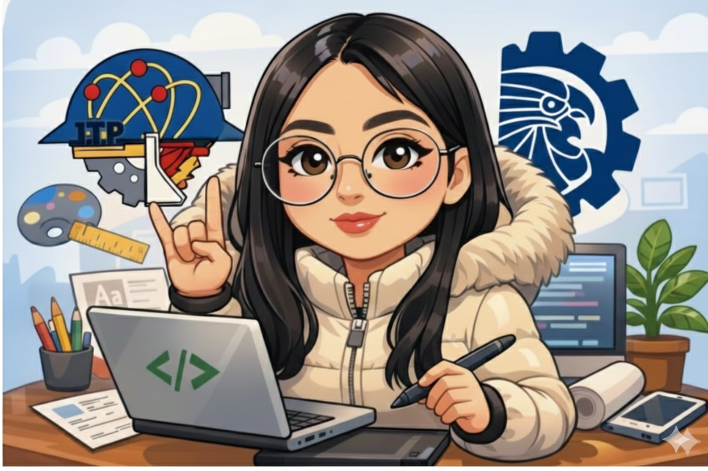

Sobre mí
Soy estudiante de Ingeniería en Tecnologías de la Información y Comunicación, con interés en el desarrollo web y el diseño creativo. Me considero una persona responsable, organizada y comprometida con mi formación académica. Disfruto aprender nuevas herramientas digitales y aplicarlas en proyectos prácticos.
Mis Hobbies
- Dibujar
- Crear manualidades
- Escuchar música

Mis Páginas Favoritas
KISSRecetas
Memes
Formación Académica
Actualmente curso la carrera de Ingeniería en TIC's, donde he desarrollado conocimientos en programación básica, estructura web, diseño digital y trabajo colaborativo.

Áreas de Especialización
- Desarrollo web básico (HTML)
- Diseño creativo y visual
- Identidad de marca
- Organización de proyectos académicos
- Redes de computadoras
Servicios Profesionales
Me gusta desarrollar páginas web básicas, crear contenido visual atractivo y participar en proyectos digitales que aporten soluciones prácticas.
Portafolio de Proyectos
Página Web Personal
Proyecto académico enfocado en la creación de una página web estructurada en HTML.
Resultados: Desarrollo correcto de estructura web y organización de contenido.
Experiencia y Certificaciones
- Participación en exposiciones académicas
- Proyectos escolares relacionados con tecnología
- Asistencia a conferencias internas y desarrollo de prácticas formativas